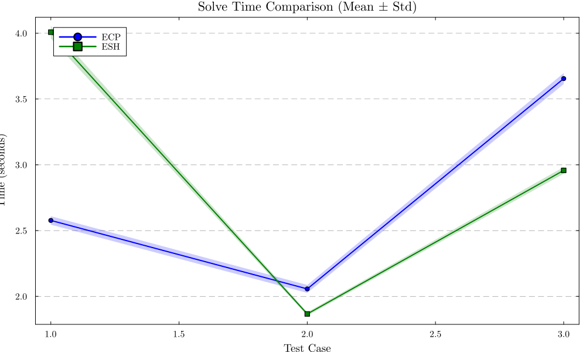
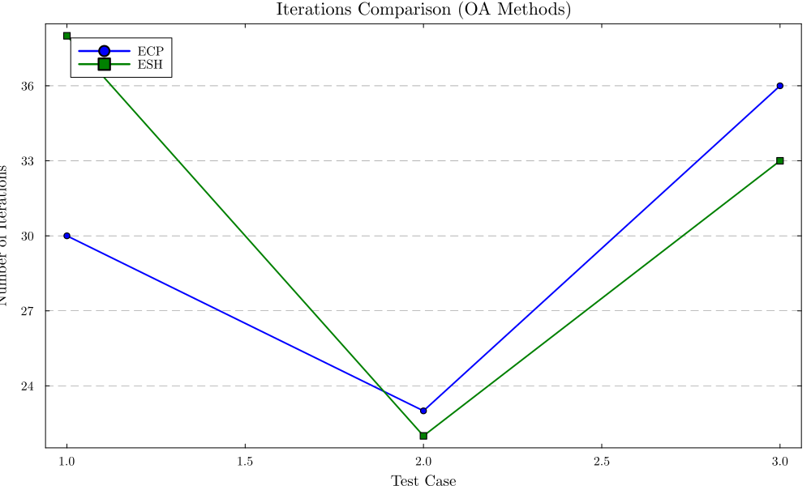
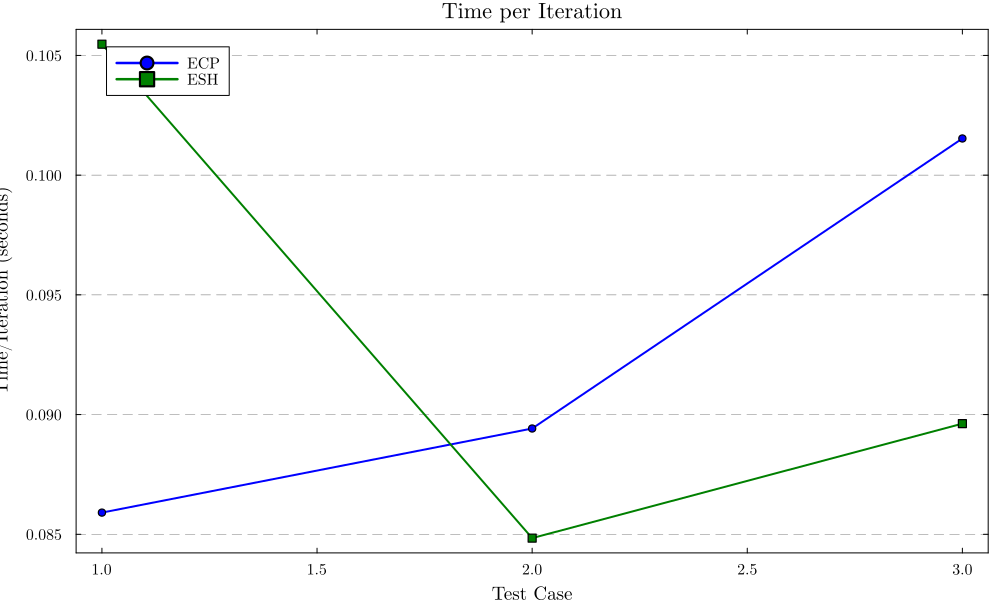
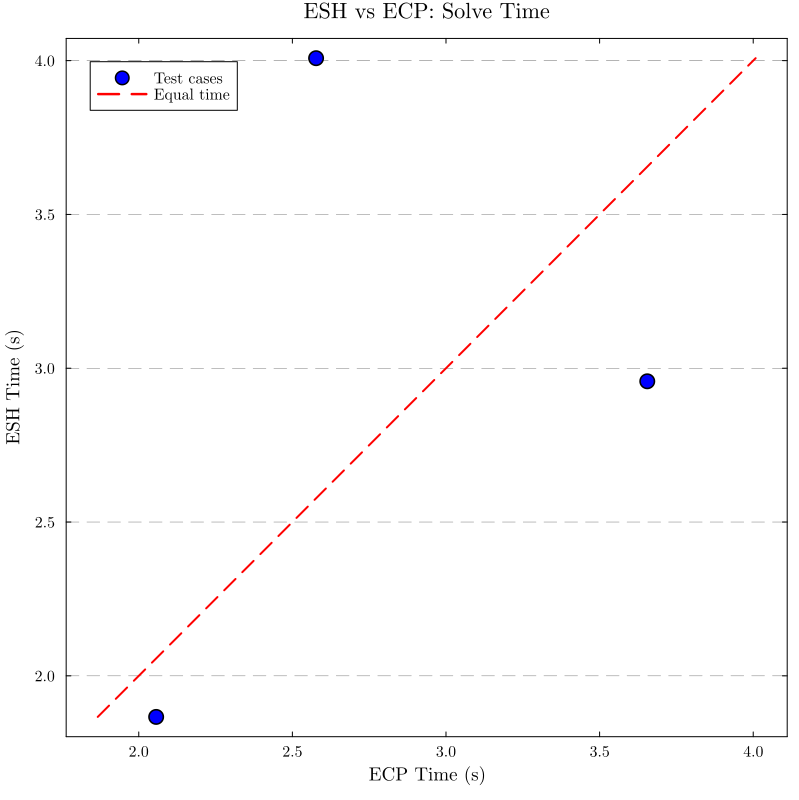
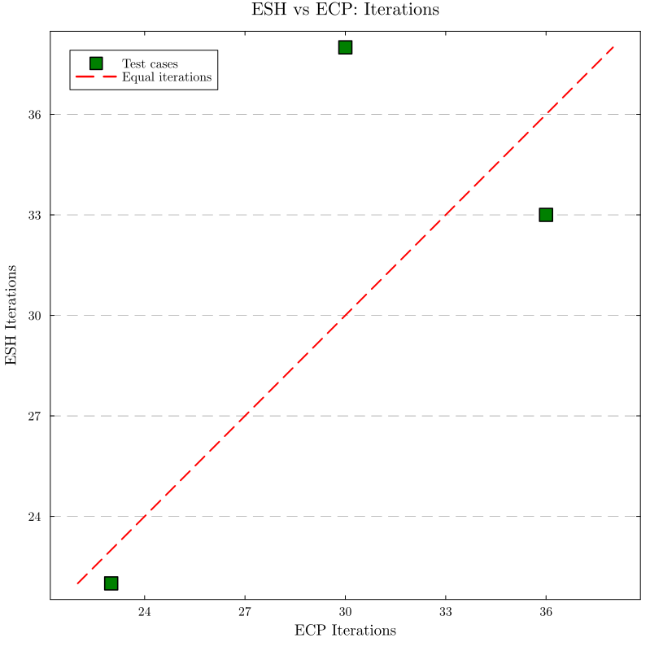
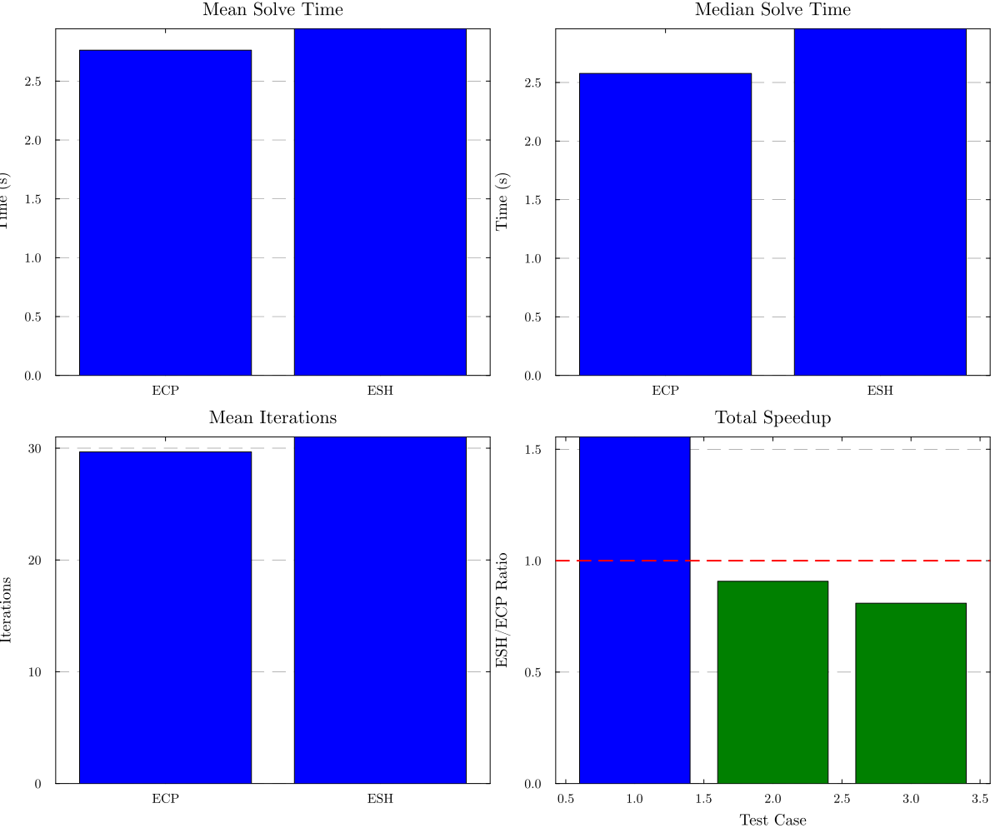

Generated: 2025-11-13 17:04:57
Test Cases: 3
Trials per Method: 3
| Case | ECP Time (s) | ESH Time (s) | Speedup | ECP Iters | ESH Iters | Iter Diff |
|---|---|---|---|---|---|---|
| Case 1 | 2.577 ± 0.032 | 4.008 ± 0.048 | 0.64x | 30 | 38 | -8 |
| Case 2 | 2.057 ± 0.03 | 1.866 ± 0.013 | 1.1x | 23 | 22 | +1 |
| Case 3 | 3.655 ± 0.042 | 2.958 ± 0.026 | 1.24x | 36 | 33 | +3 |




Points below the diagonal line indicate ESH is faster

Points below the diagonal line indicate ESH uses fewer iterations

This benchmark follows rigorous best practices to ensure fair comparison:
Results are FAIR and ORDER-INDEPENDENT